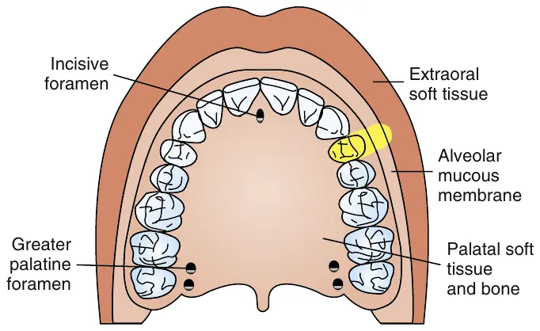
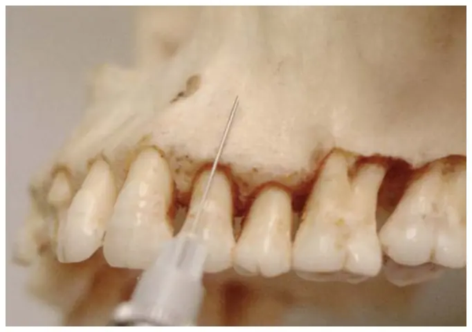

نسخه استخراجشده؛ ترجمه یا تأیید علمی انجام نشده است. وضعیت: captured
خانمی ۳۵ ساله برای ترمیم دیستال دندان لترال بالا آمده است. فقط همین یک دندان باید بیحس شود و لثهی اطرافش سالم است. کدام تزریق را انتخاب میکنی و سوزن را کجا میگذاری؟

در فک بالا استخوان روی ریشهها نازک و متخلخل است و محلول بیحسی بهراحتی تا اپکس نفوذ میکند. برای همین تزریق سوپراپریوستئال رایجترین راه بیحسی پالپ دندانهای بالاست. در مطب به آن «اینفیلتراسیون» میگوییم، ولی چون محلول بالای اپکس و کنار شاخههای انتهایی بزرگ شبکهی دندانی مینشیند، از نظر فنی یک field block است.
پالپ و ناحیهی ریشهی همان دندان، پریوست باکال، بافت همبند و مخاط روی آن.
موفقیتش بیش از ۹۵٪ است، فنی ساده است و آسپیراسیون مثبت در آن کمتر از ۱٪ رخ میدهد. اما برای بیش از دو یا سه دندان، بلاک ناحیهای بهتر است.
سوزن: کوتاه، گیج ۲۷. نقطهی ورود: عمق وستیبول بالای اپکس دندان. لندمارکها: تاج و برجستگی ریشه.

بیحسی پالپ را با اسپری سرما یا تست الکتریکی (EPT) بسنج.
اشتباه رایج: سوزن پایینتر از اپکس بماند؛ لب بیحس میشود ولی پالپ نه. در کانین با ریشهی حدود ۱۶ میلیمتری، بلندترین ریشهی فک بالا، بیشتر پیش میآید. محلولی که دور از استخوان بنشیند هم به پالپ نمیرسد؛ سوزن را به پریوست نزدیکتر کن. سوزنی که به پریوست فشار بیاورد درد دارد؛ کمی بیرون بکش و دورتر دوباره وارد شو.